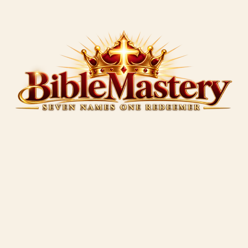

BibleMastery Library
Seven Names One Redeemer
← Personal Study
Main Page
Choose a book
Select a title from your Library to begin reading.
BIBLEMASTERY LIBRARY
Open source ↗
About this book
Good places to start
RECOMMENDED STARTING POINT